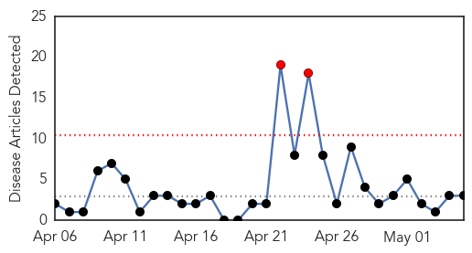

Unknown
30-Day Web Trend
0 alerts, 0 warnings

30-Day Twitter Trend
2 alerts, 0 warnings

Article Locations

Article Confidences

Top Articles:
- 0.941
- Midwest dog flu has some kennels asking for vaccinations
- 0.940
- Kitsap sees rise in gonorrhea rate
- 0.925
- WHO issues health assessment on impact of Nepal earthquake
- 0.917
- Chicago Tribune
- 0.917
- Chicago Tribune
- 0.917
- Chicago Tribune
- 0.917
- Chicago Tribune
- 0.917
- Chicago Tribune
- 0.917
- Chicago Tribune
- 0.917
- Chicago Tribune
- 0.917
- Chicago Tribune
- 0.917
- Chicago Tribune
- 0.917
- Chicago Tribune
- 0.917
- Chicago Tribune
- 0.917
- Chicago Tribune
- 0.917
- Chicago Tribune
- 0.917
- Chicago Tribune
- 0.917
- Chicago Tribune
- 0.917
- Chicago Tribune
- 0.888
- 41 Sickened and 7 Hospitalized with E. coli After Attending Milk Makers Fest
- 0.881
- Surge in flu cases in NSW prompts cruise ship warning
- 0.866
- An uptick in Lyme disease in Utah?
- 0.861
- Chlamydia Outbreak Has Set Off In West Texas High School
- 0.847
- Food poisoning cases soar with rising mercury in Bhopal
- 0.830
- The alarm over unsafe food
- 0.798
- S/J sees sharp decline in incidence of malaria
- 0.783
- Nepal: MSF starts reaching people in remote mountain regions by helicopter and on foot following the earthquake
- 0.775
- No malaria bearing mosquitoes identified in Malta and risk of infection is only through travel
- 0.758
- Nepal's quake death toll reaches 7,365, as reconstruction under plan
- 0.749
- Panic at US school after student is diagnosed with tuberculosis
- 0.720
- Nepal quake takes toll on orthopedic, psychological cases
- 0.707
- All known malaria cases imported
- 0.695
- Israeli veterans slam Gaza war tactics, indiscriminate fire
- 0.680
- Belle River mom in critical condition with flesh-eating disease
- 0.659
- Lawmakers set to back spy bill dubbed ‘French Patriot Act’
- 0.651
- Islamic State group claims Texas attack, first in US
- 0.651
- 'Religious profiling' of Muslim children in French town causes outcry
- 0.635
- NYPD officer dies from gunshot wound amid ‘historic’ anti-police sentiment
- 0.635
- France, Saudi Arabia jointly warn of Iran deal 'destabilisation'
- 0.635
- Burundi court upholds president’s controversial third-term bid
- 0.635
- WHO/UNHCR issue new guide on mental health in humanitarian emergencies
- 0.609
- Far right figurehead Le Pen slams ‘backstabbing’ daughter
- 0.608
- Steps being taken to avoid bird flu in RI
- 0.602
- Ministry of Public Health to send another medical team to Nepal
- 0.593
- Lyme Disease, Tick Bites, And Tips For Severe Pain Relief - Hometown Station
- 0.583
- Dry Spring Minimises PEDv Spread
- 0.577
- For French press, UK elections all about EU referendum
- 0.574
- Italy passes electoral overhaul to end chronic instability
- 0.571
- The Globalisation of Public Health: Ensuring Healthcare access for all
- 0.552
- Healthcare : We need specialists for patients dealing with physical, mental trauma
Showing top 50 articles...
Top Tweets:
- 0.579
- RT: Hoy en discutimos reporte del CDC sobre la salud de los Hispanos
Meningitis
30-Day Web Trend
2 alerts, 0 warnings

30-Day Twitter Trend
1 alerts, 0 warnings

Article Locations

Article Confidences
Top Articles:
Top Tweets:
-
No tweets found for May 05, 2015